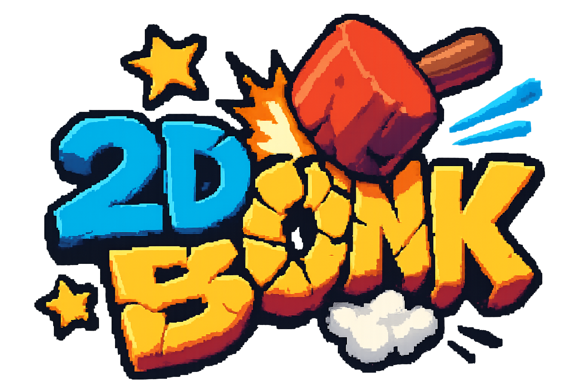
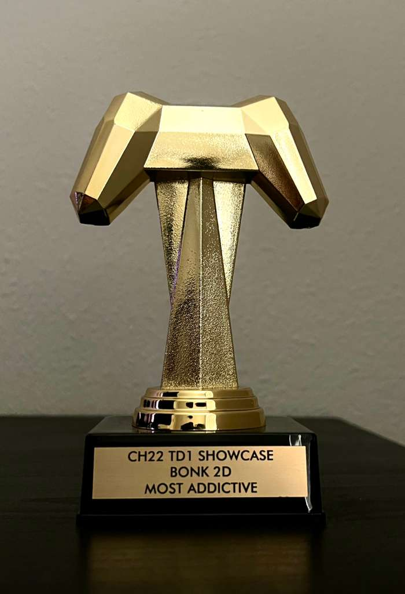
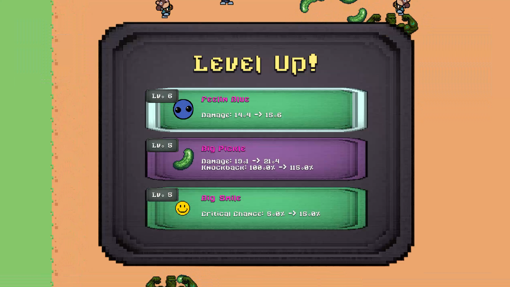
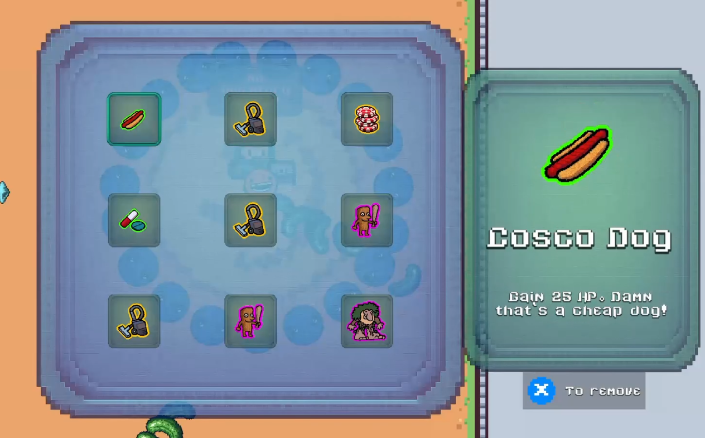

2DBonk
Systems Design | Gameplay Programming | UI/UX Implementation | Content Pipeline
Play The Game →Summary
2DBonk is a humor-focused 2D survivors-style roguelike prototype built in Unity in ~2.5 weeks.
The game combines horde survival combat with increased player agency through inventory management
and rhythm-based “Aura Post” challenges that reward powerful stat upgrades during a run.
The project was designed as a systems showcase: modular weapons, scalable stat architecture,
data-driven enemy spawning, and a full run loop across multiple stages with build-defining rewards.
The prototype was later presented at the FIEA Industry Review, where it was selected as a finalist
and received recognition in the ”Most Addictive Game” category.


FIEA Industry Review — Most Addictive Game
Project Details
Content
3 playable characters with unique starter weapons and level-scaling bonuses
5 weapons with unique behaviour and modular upgradeable stats (damage, rate, duration, size, etc.)
12 inventory items with rarity tiers and unique behaviors
9 bobblehead passives obtained through level progression
10+ enemy types including bosses and final swarm encounters
3 stages following a progression loop (Aura Posts → boss → portal)
Systems
Modular stat architecture supporting stacking modifiers from multiple gameplay systems
Data-driven enemy spawn tables with timed events (boss spawns, swarms, final swarm state)
Object pooling system supporting large enemy counts (1000+ active enemies at ~90 FPS)
Aura Post rhythm challenge system granting build-defining stat rewards
Full run UI suite including menus, inventory, shops, reward selection, and HUD
Team and Time
Team Size: 1 (Solo project)
Time: ~2.5 weeks
Constraint: 2D-only production requirement
Goals
The goal of 2DBonk was to design and implement a complete survivors-style roguelike loop within a short
production window while experimenting with systems that give the player more agency than typical games in
the genre.
Inspired by titles such as Vampire Survivors and Megabonk, the project focuses on
large-scale enemy
encounters and build-driven progression. However, the design introduces additional decision-making layers
through an
inventory system, collectible passive items, and Aura Post challenges that require players to complete
musical-rhythm-style inputs while surviving enemy waves in real time.
From a technical design perspective, the project aimed to build a scalable systems architecture capable of
supporting large enemy counts, multiple stat modifiers, and modular gameplay content such as weapons,
items, and enemy behaviors. These systems were designed to remain flexible so that new content could be
introduced
quickly during development.
The prototype was developed over approximately 2.5 weeks under a 2D production constraint, with a strong
emphasis on rapidly implementing interconnected gameplay systems that could support a full run loop across
multiple stages.
Systems
Stat Architecture
Centralized stat architecture managed through a dedicated Stat Manager system
Each stat stored as a structured value containing base value, flat modifiers, and percentage modifiers
Supports both absolute increases (+5 HP, +1 projectile) and relative scaling (+10% damage, +20% fire
rate)
Multiple gameplay systems feed into the same stat pipeline: leveling rewards, Aura Post bonuses,
inventory items, bobbleheads, and permanent shop upgrades
Weapon stats inherit relevant player modifiers while maintaining independent stat definitions when
needed
Designed to keep stat updates consistent and predictable while enabling complex build synergies

Weapon Framework
Modular weapon framework with a shared interface supporting multiple firing patterns
Weapon execution styles include constant (always active) and cooldown-based (triggered
attacks) behaviors
Each weapon controls its own behavior via prefab-driven logic (spawns, hitboxes, projectiles,
targeting rules)
Upgrade pipeline applies only relevant scaling stats per weapon (e.g., Big Smile ignores projectile
count)
Designed for rapid weapon iteration without rewriting core combat code

Inventory, Items, and Bobbleheads
Limited-slot inventory system designed to increase player decision-making during runs
Items feature rarity tiers (uncommon → legendary) and provide build-defining stat bonuses or unique
effects
Item effects implemented as ScriptableObjects with behavior prefabs (e.g., periodic XP vacuum,
kill-scaling damage)
Bobbleheads act as upgradable passive rewards that modify key stats and influence build direction
Built to support rapid content expansion through data-driven definitions

Spawning, Events, and Performance
Data-driven spawn table system per stage using ScriptableObjects (weights, time windows, caps, boss
rules)
Event system supports special phases: boss windows, timed swarms, and a permanent final swarm mode
Enemies pooled on level start to avoid runtime instantiation spikes and support high entity counts
Stress-tested with 1000+ active enemies at ~90 FPS (1700+ at ~60 FPS in editor testing)

Aura Post Rhythm Challenge
“Aura Posts” introduce an active skill challenge inside a survivors-style run loop
Rhythm-input mini-game grants stat rewards while enemies remain active (risk/reward tension)
Rewards scale by rarity and are influenced by the player’s Luck stat (which can be upgraded)
Rewards integrate directly into the stat architecture to enable build synergy and progression spikes
Designed to increase player agency beyond typical auto-attack survivor mechanics

Technical Challenge: Scalable Stat Architecture
2DBonk features a large number of gameplay statistics and multiple systems that modify them
simultaneously during a run,
including leveling rewards, Aura Post bonuses, inventory items, bobbleheads, permanent upgrades, and
weapon scaling.
Without a centralized system, stat updates could easily become fragmented or produce inconsistent
results
when multiple modifiers stacked together — especially across gameplay, UI, and weapon logic.
The goal was to create a stat architecture that allowed many independent gameplay systems to modify player
statistics while keeping final values predictable and easy to query across the codebase.
Solution
I implemented a centralized Stat Manager responsible for calculating and exposing all runtime stat
values.
Each stat is stored as a structured value containing a base value, accumulated flat modifiers, and
percentage modifiers.
Final values are calculated using a consistent formula:
final = (base + flat modifiers) × (1 + percentage modifiers).
Gameplay systems modify stats through the Stat Manager rather than directly editing gameplay variables,
allowing items, aura rewards, leveling bonuses, and permanent upgrades to stack cleanly while remaining
independent.
Weapons maintain their own upgrade definitions but inherit relevant player stats through the same
pipeline.
Attack speed, damage multipliers, and duration are shared, while weapon-specific attributes
(such as projectile count or pierce) are only applied where relevant.
Systems query final stat values through a consistent API (e.g.
StatManager.GetStat(StatTypes.Damage)),
ensuring gameplay behavior, UI feedback, and weapon calculations all reference the same computed values.
Outcome
This architecture allowed multiple progression systems to interact simultaneously without conflicting
gameplay behavior.
New items, weapons, and stat bonuses could be added quickly during development while maintaining
predictable stacking rules.
The centralized stat pipeline also simplified integration between combat, inventory, leveling rewards,
and UI systems, enabling rapid iteration during the short 2.5-week development window.
Technical Challenge: Large-Scale Enemy Spawning
As a survivors-style game, 2DBonk required large numbers of enemies simultaneously on screen.
During testing, the game frequently maintained hundreds of active enemies while continuing to spawn new
waves based on progression events such as bosses, swarms, and final survival phases.
Instantiating enemies dynamically at runtime quickly became a performance bottleneck,
especially when enemy counts increased into the hundreds. A spawning system was required that could
support large entity counts while maintaining stable frame rates.
Solution
I implemented an enemy spawning architecture built around ScriptableObject spawn tables combined
with
an object pooling system.
Each level references a spawn table defining which enemy types can appear, their spawn weights, time
ranges,
and special conditions such as boss encounters or swarm phases.
At level initialization, enemies are pre-instantiated and stored in pools grouped by enemy type.
The spawn system retrieves enemies from these pools rather than creating new instances at runtime.
The spawn tables also support event-driven spawning behavior, including:
• Boss encounters that temporarily pause normal spawns
• Swarm phases that increase spawn intensity for a limited duration
• A final survival phase that triggers continuous enemy waves when the level timer expires
Outcome
This system allowed the game to sustain approximately 1000 concurrent enemies at ~90 FPS,
with stress tests reaching roughly 1700 enemies at ~60 FPS in the editor.
The spawn table architecture also allowed enemy encounters to be tuned through data rather than code,
enabling rapid iteration of pacing and difficulty during development.